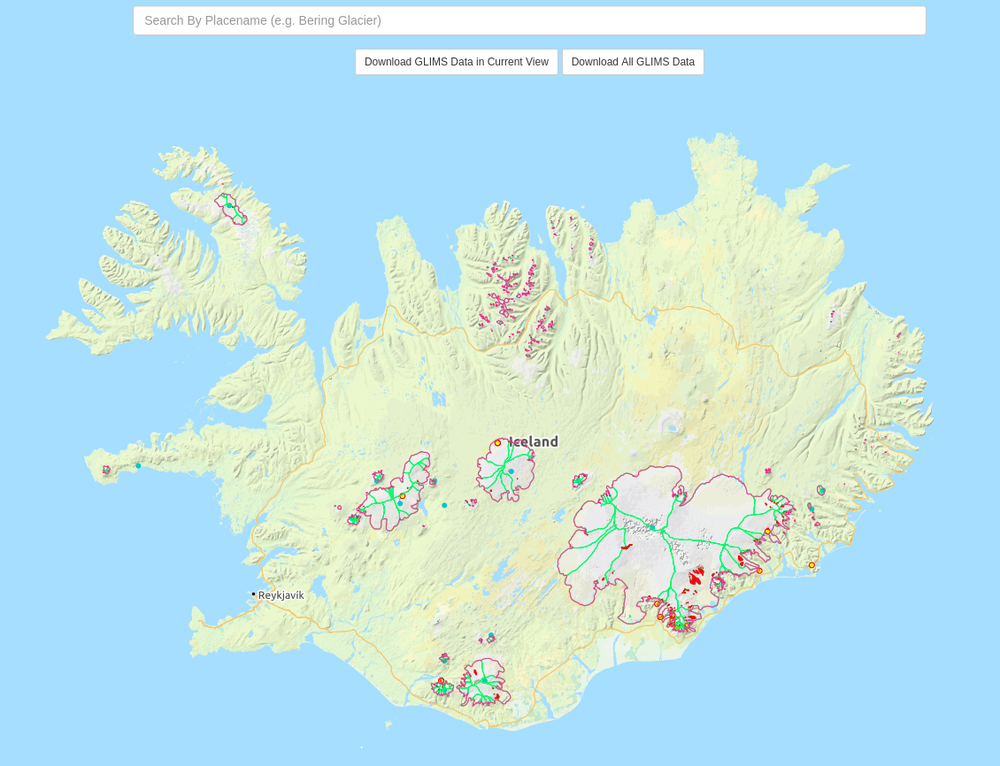

使用色階表為網格資料著色
Contents
8. 使用色階表為網格資料著色#
注意
本教學適用於 GMT 6 的現代模式。
在前幾章中，我們簡單介紹了地圖的著色技巧。本章將延續這個主題，介紹如何熟練的運用色階表，在地圖上任何你想要的地方著色。
8.1. 目標#
使用美國國家太空總署 (NASA) 提供的 ITS_LIVE 的資料集1與美國國家冰雪數據中心 (NSIDC) 提供的 GLIMS 冰河覆蓋區域資料2，繪製冰島上所有冰河的移動速度。為了方便判讀冰河移動速度，在地圖下方加上了色階條顯示速度與顏色的對應關係。圖中特別標記了冰島最大的冰帽：瓦特納冰原 (Vatnajökull)。全冰島移動速度最快的冰河就發源於此冰帽，每年移動超過 400 公尺。沒有數據的冰河區域，會以灰色呈現在地圖上。
{kind=link}
直接觀看指令稿
8.2. 使用的指令與概念#
basemap- 設定繪圖區、座標軸與邊框coast- 繪製海岸線與陸海域填色clip- 只在給定的多邊形區域內繪製資料makecpt- 製作與修改色階表grdimage- 繪製著色影像plot- 繪製多邊形colorbar- 繪製色階條text- 在圖上標記文字GMT 共用選項：
--長指令外部指令
gdalwarp- 把網格資料重投影，並轉檔成 NetCDF 格式如何解釋色階表 (CPT, color palette table) 的內容
8.3. 前置作業#
我們這次要使用兩種不同的額外資料，第一是冰河的移動速度，第二是冰河的覆蓋範圍。拜科技發展所賜，這兩種資料都可以在網路上免費取得。
首先來尋找冰河速度的資料吧。NASA 的 ITS_LIVE 計畫 (全名為「多種衛星組合成的陸冰速度與高度的時間序列」，Inter-mission Time Series of Land Ice Velocity and Elevation) 提供了多年份的冰河速度資料3。前往 ITS_LIVE 的資料搜尋網頁，在世界地圖上點選冰島的區域，會跳出一個白色的小視窗，如下圖所示。
點選藍色的區塊，選擇「Composite: 240m」(多年份彙整資料，240 米解析度) 的資料集，最後再點選「v」(速度) 的連結，下載 ICE_G0240_0000_v.tif。這是一個 GeoTIFF 檔，也是一種網格地理資料儲存的格式，與 GMT 支援的 NetCDF 格式類似。不同的是，GeoTIFF 大多使用 .tif 作為副檔名，而且自身帶有網格的投影法與座標系統等資料。本檔案使用的投影法是 NSIDC 極區投影。為了讓 GMT 能夠正確讀取本檔案，我們需要使用 GDAL 附的 gdalwarp 指令，把 Geotiff 轉檔為 NetCDF 格式，並且重投影成經緯度編碼 (EPSG:4326)：
$ gdalwarp -t_srs EPSG:4326 -dstnodata NaN -of NetCDF ICE_G0240_0000_v.tif ICE_G0240_0000_v_EPSG4326.nc
# 選項意義：
# -t_srs: 輸出檔案的投影法 (EPSG 是投影法的編碼系統。EPSG:4326 就是 WGS84 經緯度座標系統的編碼代號。)
# -dstnodata: 輸出檔案中代表「無資料」的數值 (NaN 意味著使用浮點數的 NaN 數值)
# -of: 輸出檔案格式
注意我們使用了不同的副檔名 .nc 代表這是 NetCDF 格式的網格檔。
備註
雖然這邊你可以使用任何你想得到的附檔名，但為了方便識別，我只推薦使用 .nc 或者之前提及到的 .grd 作為 NetCDF 檔的副檔名。
再來我們要下載冰河覆蓋區域的資料。NSIDC 的 GLIMS 資料庫 (全名為「從太空測量全球陸冰」，Global Land Ice Measurements from Space) 具有全球冰河的資料4，但我們只需要冰島的區域就可以了。前往 GLIMS Glacier Viewer，把地圖滑到冰島周圍，你應該會看到下圖：
{kind=link}
點選「Download GLIMS Data in Current View」，然後在新開啟的視窗中的 File format 選單中選擇 GMT 格式，其他選項保持預設，最後按下 Download Data 按鈕。把下載的檔案解壓縮，裡面的 glims_polygons.gmt 檔案就是我們要的冰河覆蓋區域的多邊形檔。把它改名為 glims_iceland_glacier_outlines.gmt 以茲識別。
備註
這個 .gmt 檔其實是純文字檔，可以使用文字編輯器開啟。此格式將在「繪製向量式資料」中詳細描述與解釋。
為了方便起見，你也可以直接從以下連結取得本章節使用的兩個檔案：
8.4. 操作流程#
首先我們使用 basemap 指定邊框、作圖區域與版面尺寸等等的設定；這裡我們要順便介紹一個新的指定地圖區域的方法。在之前的章節中，-R 選項通常是以 西/東/南/北 邊界的座標指定。不過，當繪圖區域只涵蓋一個國家時，我們也可以簡單的使用國家的二位字母代碼 (請見畫筆與調色技巧)，再加上 +R 調整地圖邊框與國家邊界的距離。因此，我們的 basemap 指令就變為：
gmt basemap -Baf -BWNEs -RIS+R0.2 -JM15c
# -RIS+R0.2: 以冰島 (IS) 作為地圖區域，冰島國界與地圖四周邊框保有 0.2 度的距離
接下來我們就來綜合前幾個章節學到的指令以及相關選項，把冰島的海岸線畫出來：
gmt begin iceland_glacier_speed png
gmt basemap -Baf -BWNEs -RIS+R0.2 -JM15c
gmt coast -Wthinnest,darkred -Gdarkseagreen1 -Slightblue -A1
gmt end

地圖下方沒有顯示經緯度座標，是預留給色階條的空間。
我們的下一步就是要把冰河速度畫上去，不過得先決定一個合適的色階才行。在之前繪製地形的例子中，我們使用了 GMT 本身提供，為地形資料設計的色階，而在本例中，由於沒有任何一個色階是設計用來表示冰河速度的，因此我們得自行設計才行。在 GMT 中設計色階的步驟為
決定母色階 (預先定義好的顏色組合，但是對應的數值範圍尚未決定) 或是挑選數種顏色自行製作母色階
使用
makecpt或是grd2cpt決定色階對應的數值範圍以及前景、背景色等等資訊使用
grdimage或是其他接受色階檔的指令畫上你的資料
在本章中，我們會介紹最簡單的方法，也就是決定母色階之後，使用 makecpt 製作地圖要用的色階。如需參閱進階的技巧，請至色階檔的編修與呈現。
GMT 支援的所有母色階列表可以在官方說明頁面中查詢。我在本章節中使用的是 batlow 色階，如下圖所示。你也可以自由選擇其他喜歡的色階代替。

接下來我們要決定對應的數值範圍。你可以使用 GIS 軟體開啟 ICE_G0240_0000_v_EPSG4326.nc 並查看數值的分佈，或是使用 grdinfo 或 GDAL 的 gdalinfo 等指令在指令列中查看最大最小值。為了方便起見，我在這裡提供了一個合理的範圍：0 至 400。本網格檔的數值單位是 m/yr (公尺/年)。決定好色階檔和範圍後，就可以使用 makecpt 指令。它的基本語法為
gmt makecpt -C母色階檔名 [-T最小值/最大值/間距] [-Z]
只有 -C 是必要選項，但 -T 也是是讓我們指定範圍的重要選項。最小值與最大值指定色階對應的數值範圍，而間距意味著程式每隔多少數值就會對母色階取樣。我們來試著在終端機中輸入以下指令：
$ gmt makecpt -Cbatlow -T0/400/100
0 15/58.875/95 100 15/58.875/95
100 77.625/114.62/76.375 200 77.625/114.62/76.375
200 191.75/144/56.375 300 191.75/144/56.375
300 253/180.12/181.25 400 253/180.12/181.25
B 1/25/89
F 250/204/250
N white
輸入完指令後，螢幕上就會顯示這個色階表的設定：
色階表的主要部份由 4 欄資料所構成。第 1 欄與第 3 欄是數值區段，而第 2 欄與第 4 欄為這個數值區段對應的 RGB 值顏色。以第一行為例，這個色階表說明在
0至100間都使用15/58.875/95這個顏色。在間距為
100的情況下，本色階表只有 4 個顏色區段。色階表的最後三行 (
B,F,N) 對應以下三種特殊情況：B是指當數值低於色階表中的最小值時，所呈現的顏色。F是指當數值高於色階表中的最大值時，所呈現的顏色。N是指當數值為 NaN (無資料) 時，所呈現的顏色。
如果加上 -Z 選項的話，就可以把離散的色階變成連續的色階 (在兩個取樣點之間，顏色會隨著數值變化。如果不加的話，兩個取樣點之間的任意數值顏色皆相同)：
$ gmt makecpt -Cbatlow -T0/400/100 -Z
0 1/25/89 100 34.75/91.75/96
100 34.75/91.75/96 200 128/129.5/51
200 128/129.5/51 300 244.25/158.25/113.75
300 244.25/158.25/113.75 400 250/204/250
B 1/25/89
F 250/204/250
N white
你會發現第 2 欄與第 4 欄的顏色值現在不一樣了。以第一行為例，如果數值介於 0 與 100 之間，GMT 會以線性內插的方式找到對應的顏色。
在此腳本中，makecpt 以如下的方式設定：
gmt makecpt -Cbatlow -T0/400/10 -D -Z -M --COLOR_NAN=gray
# -C: 母色階檔名 (batlow)
# -T: 對應數值範圍 (0 至 400 中每隔 10 對母色階取樣)
# -D: 使用色階的端點顏色當作前景與背景色 (修改 B 與 F 的設定；任何大於 400 的數值都會與 400 有著相同顏色；任何小於 0 的數值都會與 0 有著相同顏色)
# -Z: 使用連續色階
# -M: 使用 GMT 預設的 NaN 顏色當作無資料點的顏色 (修改原本 N 的設定)
# --COLOR_NAN: 指定 GMT 預設的 NaN 顏色 (詳見後述)
我們在指令中使用了 --COLOR_NAN 這個選項。它是所謂的「長指令」，語法上與 -R、-Z 等等的「短指令」不同，要用如下的語法設定：
$ 某GMT指令 --長指令名稱=長指令參數 ... # 和短指令一樣，可以無限增加
搭配 -M 和 --COLOR_NAN，我們可以自由的更改數值為 NaN 時顯示的顏色。
在 GMT 6 (現代模式) 中下達 makecpt 後，色階的相關資訊會被保存在一個暫存檔中。當你接下來在腳本中使用 grdimage 等指令繪圖時，就可以不用附上 -C 指令和任何色階檔檔名，GMT 就會自動的讀取並套用這個暫存色階檔在網格擋上。
備註
在 GMT 6 的傳統模式以及 GMT 5 以降的版本中，你需要使用重導向指令 > 把輸出的色階另存到一個檔案中，才能在後續的指令中使用。詳請請參閱這裡。
現在我們馬上來使用 grdimage 畫畫看冰河速度：
speed_file=ICE_G0240_0000_v_EPSG4326.nc
gmt begin iceland_glacier_speed png
gmt basemap -Baf -BWNEs -RIS+R0.2 -JM15c
gmt coast -Wthinnest,darkred -Gdarkseagreen1 -Slightblue -A1
gmt makecpt -Cbatlow -T0/400/10 -D -Z -M --COLOR_NAN=gray
gmt grdimage $speed_file
gmt end
{kind=link}
等等…冰島的輪廓整個不見了！與之前的那張地圖比對一下，看來是因為 ICE_G0240_0000_v_EPSG4326.nc 中含有廣大範圍的 NaN 資料點，因此地圖的大部分區域都被灰色蓋住了。如果我們只是移動 coast 指令到 grdimage 後方，企圖再次劃上海岸線，就會發現這其實是沒有用的，coast 的填色會蓋掉所有 grdimage 的輸出。那麼，要如何保有 coast 的填色並且讓冰河的速度一併顯示在圖上呢？這時候就要派 clip 指令上場了。clip 指令的用法為
gmt clip 作圖範圍檔案
gmt grdimage ...
gmt clip -C
作圖範圍檔案 必須要是以純文字格式記載的多邊形向量檔。相關的格式描述，我們將在「繪製向量式資料」中介紹。我們稍早之前下載的 glims_iceland_glacier_outlines.gmt 就是一個此類型的檔案。所有包夾在兩個 clip 指令內的作圖指令，都只會畫在被作圖範圍檔案定義的多邊形內。如果我們使用的是冰河範圍，那麼 GMT 就只會在冰河的覆蓋範圍內畫上冰河速度，這樣一來可以大大的減少 NaN 的灰色面積。把這段指令修改到我們的腳本中：
speed_file=ICE_G0240_0000_v_EPSG4326.nc
glacier_outline=glims_iceland_glacier_outlines.gmt
gmt begin iceland_glacier_speed png
gmt basemap -Baf -BWNEs -RIS+R0.2 -JM15c
gmt coast -Wthinnest,darkred -Gdarkseagreen1 -Slightblue -A1
# 裁剪路徑開始
gmt clip $glacier_outline
gmt makecpt -Cbatlow -T0/400/10 -D -Z -M --COLOR_NAN=gray
gmt grdimage $speed_file
gmt clip -C
# 裁剪路徑結束
gmt end
{kind=link}
這樣總算是達到我們的目標。注意在圖上仍然有些灰色區域，不過這是因為冰河速度資料本來就不是百分之百涵蓋所有冰河覆蓋區域的緣故，因此予以保留。
在地圖製作的最後幾個步驟，我們要複習前幾章學到的指令與技巧，加上冰河輪廓 (plot)、色階條 (colorbar)，以及 Vatnajökull 的標記 (text)。下方快速的列出使用的選項與它們的意義，如需更詳細的說明，請至畫筆與調色技巧及XY 點散佈圖 章節中查詢。
gmt plot $glacier_outline -Wthinner,black
# -W: 輪廓使用黑色細線
gmt colorbar -DJCB+w6c+ef -Bx100+l"Glacier Speed (m/yr)"
# -DJ: 把色階圖例畫在地圖外部的九宮格錨點中的任一個位置。下方置中 (CB)，長度 6 公分 (+w6c)，
# 在色階的最大值處劃上三角形，表示有數值超出顏色表示的最大值 (+ef)
# -B: 座標軸刻度間距為 100 (x100)，在下方列出色階的意義及單位 (+l"Glacier Speed (m/yr)")
echo -16.8 64.95 Vatnajökull | gmt text -F+f12p+jCM
# -F: 字體大小 12 點 (+f12p)，垂直水平置中對齊給定的座標 (+jCM)
8.5. 指令稿#
本地圖的最終指令稿如下：
# ==== 設定輸入檔 ====
speed_file=ICE_G0240_0000_v_EPSG4326.nc
glacier_outline=glims_iceland_glacier_outlines.gmt
# ==== 主要指令 ====
gmt begin iceland_glacier_speed png
gmt basemap -Baf -BWNEs -RIS+R0.2 -JM15c # 底圖
gmt coast -Wthinnest,darkred -Gdarkseagreen1 -Slightblue -A1 # 海岸線與填色
gmt clip $glacier_outline # 開始使用多邊形裁剪路徑
gmt makecpt -Cbatlow -T0/400/10 -D -Z -M --COLOR_NAN=gray # 製作本地圖使用的色階
gmt grdimage $speed_file # 在多邊形內繪製冰河速度
gmt clip -C # 結束使用多邊形裁剪路徑
gmt plot $glacier_outline -Wthinner,black # 冰河覆蓋範圍
gmt colorbar -DJCB+w6c+ef -Bx100+l"Glacier Speed (m/yr)" # 色階條
echo -16.8 64.95 Vatnajökull | gmt text -F+f12p+jCM # 文字標記
gmt end
備註
「繪製冰島的冰河速度地圖：以冰島國家邊界加減 0.2 度為邊界，使用 batlow 當作冰河速度的母色階，重新在 0 到 400 中取樣，製作連續色階，無資料的地方以灰色表示。冰河速度只會畫在由 glims_iceland_glacier_outlines.gmt 定義的冰河範圍內。最後畫上冰河覆蓋範圍、色階條以及標記 Vatnajökull 的位置。」
觀看最終版地圖
8.6. 習題#
使用
dem4這個母色階，繪製冰島的地形圖，並附上色階條。使用你喜歡的色階，再次繪製冰島的地形圖，但是這次在所有冰河覆蓋的區域，無視其高度，一律塗上藍色。
- 1
Gardner, A. S., M. A. Fahnestock, and T. A. Scambos, 2019 [updated 2020]: ITS_LIVE Regional Glacier and Ice Sheet Surface Velocities. Data archived at National Snow and Ice Data Center; doi:10.5067/6II6VW8LLWJ7.
- 2
Raup, B.H.; A. Racoviteanu; S.J.S. Khalsa; C. Helm; R. Armstrong; Y. Arnaud (2007). 「The GLIMS Geospatial Glacier Database: a New Tool for Studying Glacier Change」. Global and Planetary Change 56:101–110. (doi:10.1016/j.gloplacha.2006.07.018)
- 3
Gardner, A. S., G. Moholdt, T. Scambos, M. Fahnstock, S. Ligtenberg, M. van den Broeke, and J. Nilsson, 2018: Increased West Antarctic and unchanged East Antarctic ice discharge over the last 7 years, Cryosphere, 12(2): 521–547, doi:10.5194/tc-12-521-2018.
- 4
GLIMS and NSIDC (2005, updated 2019): Global Land Ice Measurements from Space glacier database. Compiled and made available by the international GLIMS community and the National Snow and Ice Data Center, Boulder CO, U.S.A. DOI:10.7265/N5V98602